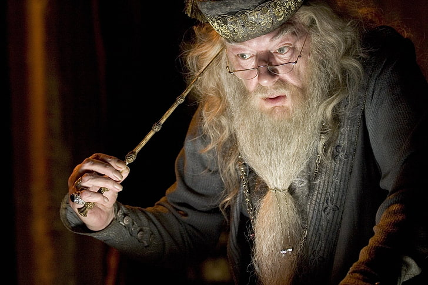
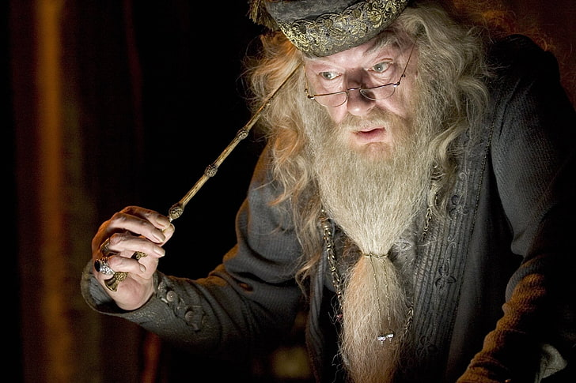

Čarobnjački Svet Harija Potera

Pored poznatog, dosadnog, svakodnevnog života Normalaca (običnih ljudi) postoji još jedan
čitav skriveni svet magije. Na celoj planeti postoje porodice, društva,
čak i paralelne vlade i države, u kojima žive i rade Čarobnjaci i Veštice,
rođeni sa darom da koriste magiju.
U knjigama je prikazana jedna takva zajednica Čarobnjaka u Britaniji, gde postoji
Ministarstvo Magije. Ono je zaduženo za bezbednost i tajnost čarobnjačkih porodica,
jer po Međunarodnom Statutu Tajnosti - Čarobnjaci moraju da ostanu skriveni od očiju
normalaca. U odnosu na mnogobrojne normalce, Čarobnjaka ima jako malo i postoji osnovan
strah da bi ih normalci uništili ako bi im otkrili da postoje.


Postoje neki među Čarobnjacima koji ne veruju da treba da se kriju. Ističu svoju superiornost, na osnovu koje veruju da treba da Čarobnjaci treba da zagospodare svetom i porobe sve koji nisu kao oni. Oni su se kroz celu istoriju Čarobnjaštva zovu Mračni Čarobnjaci, a najveći mođu njima je Lord Voldemor. Poveo je svoje pratioce - Smrtoždere u veliki građanski rat. Mnogi su mu se suprotstavljali predvođeni Albusom Dambldorom, i mnogi su poginuli.
 

Jedne noći Voldemor se lično uputio ka skrovištu u kome su se krili njegovi protivnici Džejms i Lili Poter i njihov sin Hari, koji je tada bio beba. Voldemor je lako ubio oboje Harijevih roditelja, ali kada je pokušao da ubije Harija, kletva se okrenula na njega. Hariju je ostao samo ožiljak na glavi, Voldemor je umro i rat je završen.
Voldemor je prvi put umro pre:

Hogvorts škola za Veštice i Čarobnjake
Direktor: Albus Dambldor
(Merlinov Red, Prve Klase, Veliki Magus, Gl. Volšebnik, Vrhovni Poglavar, Međunarodna Konfed. Čarobnjaka)
Dragi Posetioče,
Drago nam je da vas obavestimo da ste dobili mesto u Hogvorts školi
za Veštice i Čarobnjake. Molimo Vas da dođete do svih neophodnih knjiga
i opreme.
Semestar počinje 1. Septembra. Čekamo vašu sovu ne kasnije od 31. Jula.
Iskreno Vaša,
Minerva Mekgonagal
Zamenica direktora
Razvrstavanje se obavlja prilikom svakog prijema nove generacije u Hogvorts.
Na osnovu osobina ličnosti i vrednosti koje imate, šešir za razvrstavanje
će vas smestiti u jednu od četiri kuća:
Grifindor, Sliterin, Haflpaf ili Revenklo .


Započnite kviz:
Grifindor!
Hrabrost Odvažnost Samopouzdanje Odlučnost Viteštvo Borbenost
Sliterin!
Lukavstvo Odlučnost Ambicija Snalažljivost Liderstvo Postignuće
Haflpaf!
Odanost Pravednost Strpljenje Marljivost Prijateljstvo Iskrenost
Revenklo!
Pamet Mudrost Kreativnost Jedinstvenost Radoznalost Nezavisnost